底栏重新设计 · 四个版本
2026-10-18 第三轮。先想清楚底栏该承担什么，再谈排版：顶部已经有路径、时钟和 Codex 横条，首页有待办卡和交付月卡，所以底栏不该再堆一遍。下面四版各自只回答一个问题——A 还剩多少时间、B 有多少事等我、C 这一页的数据新不新、能按什么键、D 现在最该看哪一件。截图是把样稿挂到真实页面上拍的（数据为 22:27 只读快照），每版上面是 1440 宽，右边是 390 宽。
现状第二轮实现 · 用户不满意
左「数据源正常」，中「交付月 2026-11 · 还有 13 天」，右「⌘K 命令」和版本号。三块信息互不相关，中间大片空白，交付月和首页卡重复。
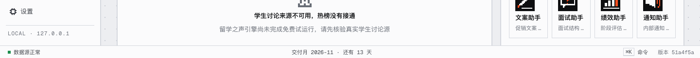
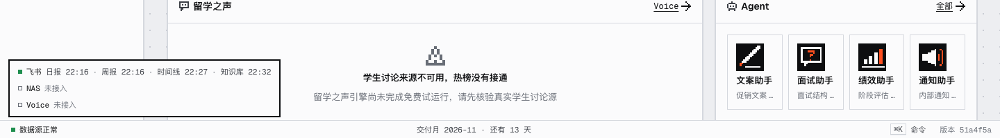
点开数据源的浮层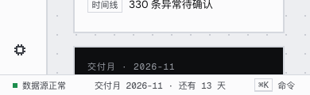
390 宽
A 截止条时间维度 · 高 30px
底栏只回答一件事：还剩多少时间。本月 31 格日历条 + 交付倒数，旁边是当前战役进度；数据源收成右边一个小方点。
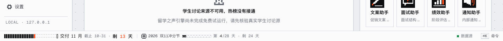
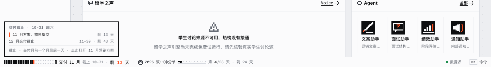
悬停 / 点击交付倒数：本月和下月截止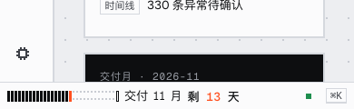
390 宽：只留日历条 + 剩几天 + 数据源点 + ⌘K
- 放哪些
- ① 本月日历格：已过墨色、今天信号橙、截止日描黑框；② 交付 11 月 · 截止 10-31 · 剩 13 天（≤3 天整句变琥珀）；③ 当前战役名 + 网点进度条 + 第 4/28 天 · 剩 24 天；④ 数据源小方点（异常时才出字「2 个来源异常」）；⑤ ⌘K。版本号移进数据源浮层底部。
- 数据来源
- 交付：
src/constants.js 的 deliveryMonth / daysToDeadline（已有）；战役：/api/v3/campaigns/current（已有，底栏多拉一次）；数据源：/api/v3/status（已有）。不需要新接口。
- 交互
- 悬停日历格看日期；点交付倒数→营销页当月方案，浮层列本月 / 下月截止；点战役→战役页；点方点→各来源时间浮层（沿用现有明细）。没有战役时这一块不出现。
- 窄屏
- 战役整块隐藏，日历格变 3px 宽；一行放得下，不横向滚动。
- 优缺点
- ＋ 有一眼能读的「时间感」，位图风味道最足；信息互相相关。
－ 交付倒数和首页交付月卡重复；数据源降级成一个点，平时不显眼；底栏高度从 26 增到 30。
B 计数托盘待处理维度 · 高 26px
底栏像系统托盘，回答：有多少事等我处理。一格一个数字，0 是灰的，需要动手的用信号橙下划线；点格子直接跳过去。
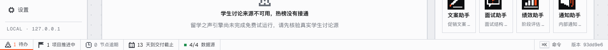
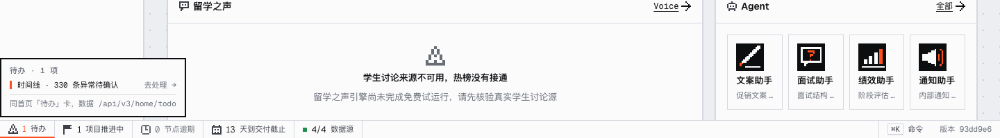
点「待办」：列出待办，点一条直接去处理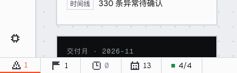
390 宽：只留图标 + 数字，五格均分
- 放哪些
- ① 待办数（现在 1：时间线 330 条异常）；② 项目推进中个数；③ 项目节点逾期数；④ 距交付截止天数；⑤ 数据源 4/4 正常；右侧 ⌘K、版本号。
- 数据来源
- 待办
/api/v3/home/todo、项目 /api/v3/projects、数据源 /api/v3/status，都已有。但每页底栏都去拉整份项目列表偏重，实现时建议在 /api/v3/status 里加一个 counts 汇总字段（只查库，不触发飞书）——要改 API.md。
- 交互
- 点待办→浮层列出各条，再点进对应页；点项目 / 逾期→项目页（逾期时带筛选）；点交付→营销页；点数据源→各来源时间浮层。数字变化时用 FlipNumber 翻一下。
- 窄屏
- 文字标签隐藏，五格均分整行，⌘K 和版本号隐藏（手机上没有键盘）。
- 优缺点
- ＋ 最「有用」，每格都能点进去干活；扩展方便（以后加 Agent 运行中、Voice 预算等）。
－ 和首页待办卡部分重复；格子多了会变成一排数字墙，需要克制只放会变的；可能需要后端加汇总字段。
C 跟着页面情境维度 · 高 26px
参考编辑器底栏：左边写这一页的数据从哪来、新不新、要注意什么，右边写这一页能按的快捷键。换页内容就换。
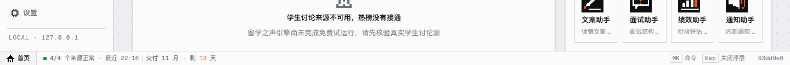
首页：来源总状态 + 交付倒数
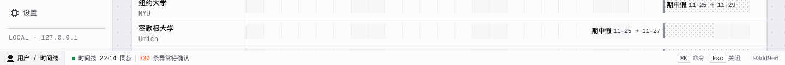
用户 / 时间线：时间线同步时间 + 异常数
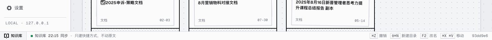
知识库：同步时间 + 这页的快捷键（⌘Z / ⇧⌘N / F2 / ⌘X ⌘V，页面里本来就支持，只是没地方提示）
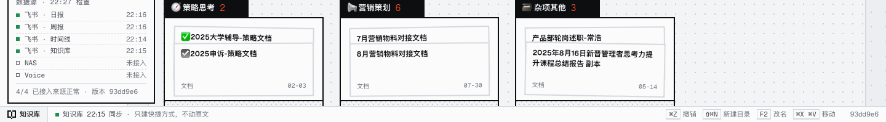
点左边：仍可看全部数据源
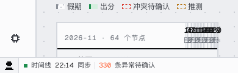
390 宽：页面名只留图标，快捷键全部隐藏
- 放哪些
- ① 当前页图标 + 名称（浅底块）；② 本页相关的数据源和同步时间（首页=全部来源，用户=时间线，知识库=知识库，日/周报=日报周报，营销=交付倒数）；③ 本页一条要注意的数（异常、未读等）；④ 本页快捷键；⑤ 版本号（灰）。
- 数据来源
/api/v3/status（已有）+ 路由（App.jsx 把当前模块传给底栏）+ 一张「模块 → 显示什么」的对照表写在 StatusBar 里。异常数沿用 /api/v3/home/todo。不需要新接口。- 交互
- 点左侧→全部数据源浮层；快捷键只是提示，不可点；没有专属信息的页（如 Agent、设置）退回首页那套。
- 窄屏
- 页面名只留图标，快捷键隐藏，只剩「来源 · 时间 · 要注意的数」。
- 优缺点
- ＋ 不和首页重复，信息总是和眼前这页有关；顺手把藏着的快捷键露出来。
－ 底栏内容不固定，不能「随时一眼看交付倒数」；每加一个模块要补一行对照表；和顶部路径「niuma-home / 知识库」有点重复（页面名那块可去掉）。
D 一句话注意力维度 · 高 26px
整条只说当下最该看的一件事，用方块光标逐字打出；右边「1/3」可以翻看其余几条。没事时就安静地显示交付倒数。
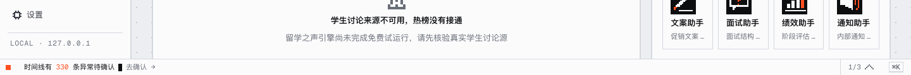
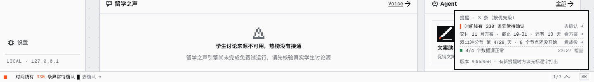
点「1/3」：按优先级列出全部提醒，最后一行是数据源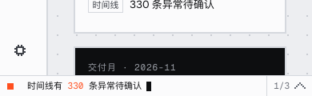
390 宽：同一句，太长时省略号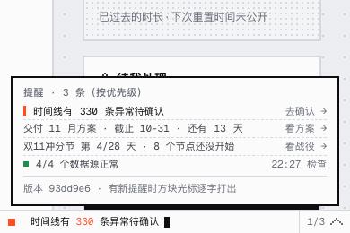
390 宽展开
- 放哪些
- 一句提醒 + 跳转词（去确认 → / 看方案 →）；左侧方块颜色 = 级别（橙=要处理，绿=一切正常）；右侧条数翻页、⌘K。优先级：数据源异常 > 截止 ≤3 天 > 待办 > 战役节点 > 交付倒数。
- 数据来源
/api/v3/status、/api/v3/home/todo、/api/v3/campaigns/current、交付月工具，都已有；排序规则写在前端。- 交互
- 点整句→跳到对应页面；点「1/3」→浮层列全部；新提醒出现时用 TypeText 逐字打出一次，不循环滚动、不自动轮播。
- 窄屏
- 结构不变，句子太长时省略号；⌘K 隐藏。
- 优缺点
- ＋ 最安静、最好读，永远只有一行字；天然把要紧的顶到前面。
－ 信息量最少，别的要点开才看到；优先级规则要靠我们拍脑袋定，定错了会一直提示不重要的事。
横向对比
| A 截止条 | B 计数托盘 | C 跟着页面 | D 一句话 |
|---|
| 回答的问题 | 还剩多少时间 | 有多少事等我 | 这页数据新不新、能按什么键 | 现在最该看哪一件 |
| 常驻信息量 | 中（3 块） | 多（5 格） | 中（随页变化） | 少（1 句） |
| 数据源状态 | 右侧小方点 | 一格 4/4 | 左侧本页来源 | 只在出错时顶上来 |
| 和首页重复 | 交付倒数重复 | 待办重复 | 基本不重复 | 少量 |
| 新接口 | 不需要 | 建议在 status 加 counts | 不需要 | 不需要 |
| Codex 重置 | 四版都不放：顶部 Codex 横条已常驻，且横条归另一个会话在改，避免两处同时显示。如果想把横条下沉到底栏、腾出顶部 30px，可以作为单独提议再议。 |
| 我的建议 | C：唯一不和首页、顶栏重复的方案，还能顺手露出知识库这类页面里藏着的快捷键；如果更在意「随时看到交付倒数」，选 A。B、D 也可以组合：B 的计数格放进 C 的右侧。 |